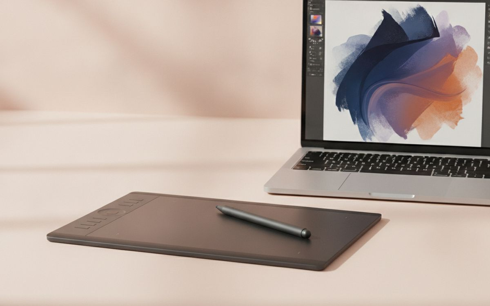
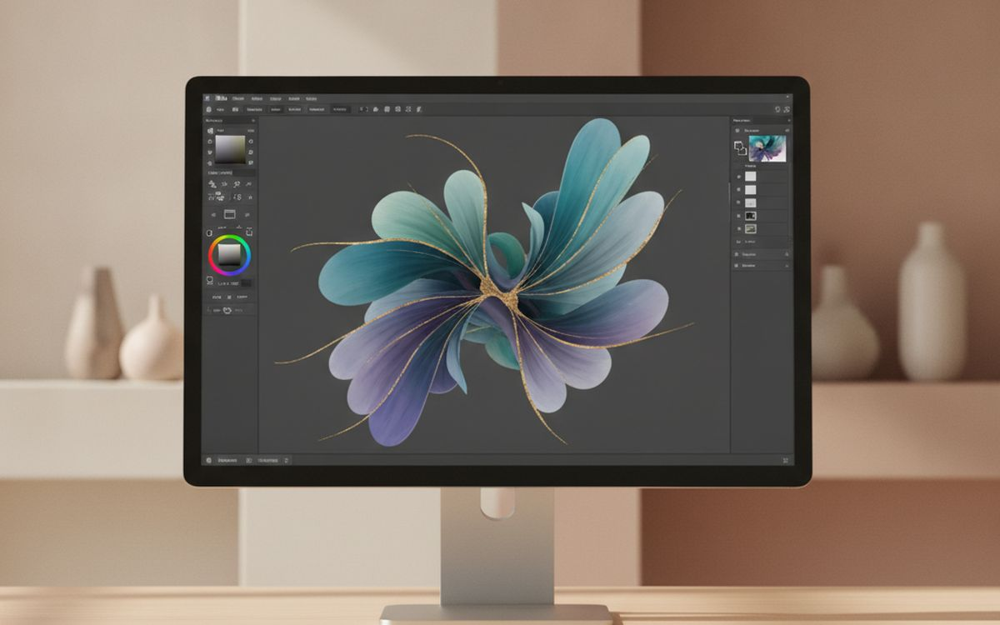
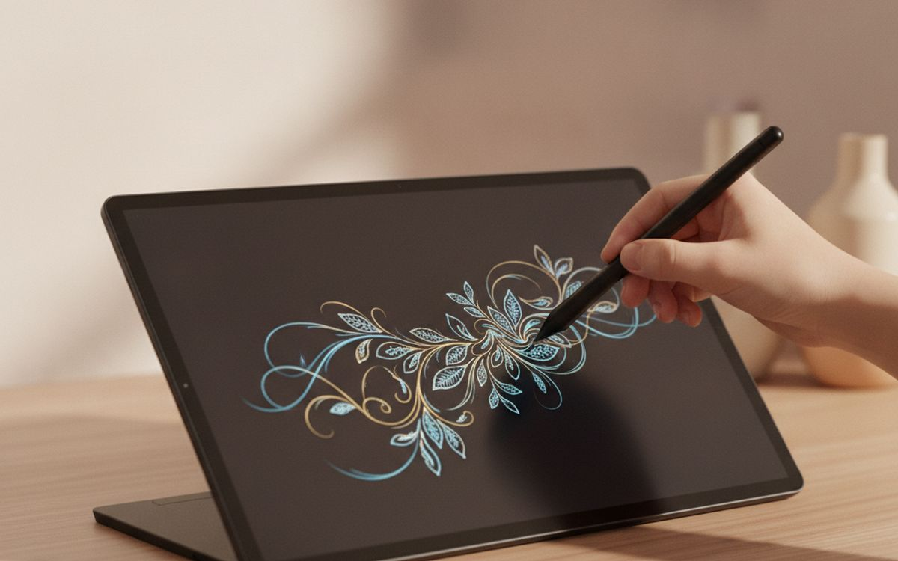
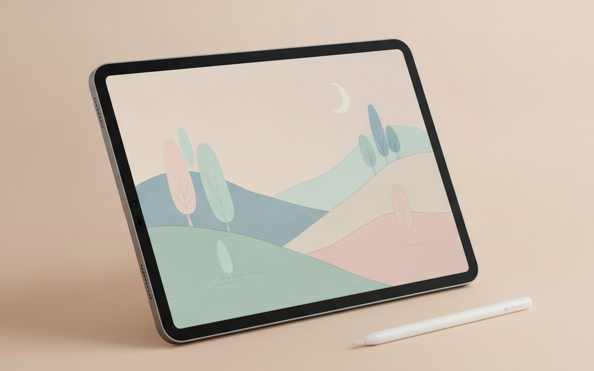
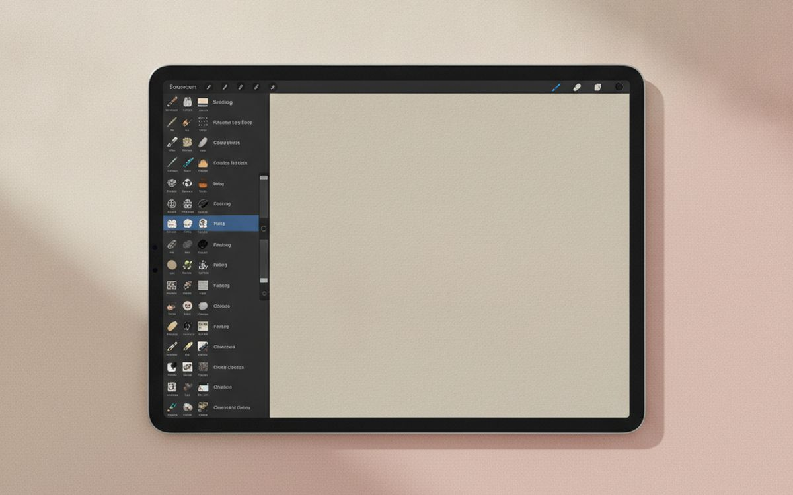
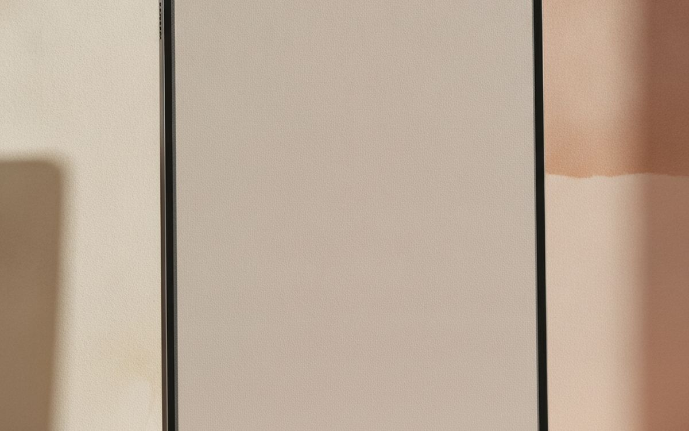
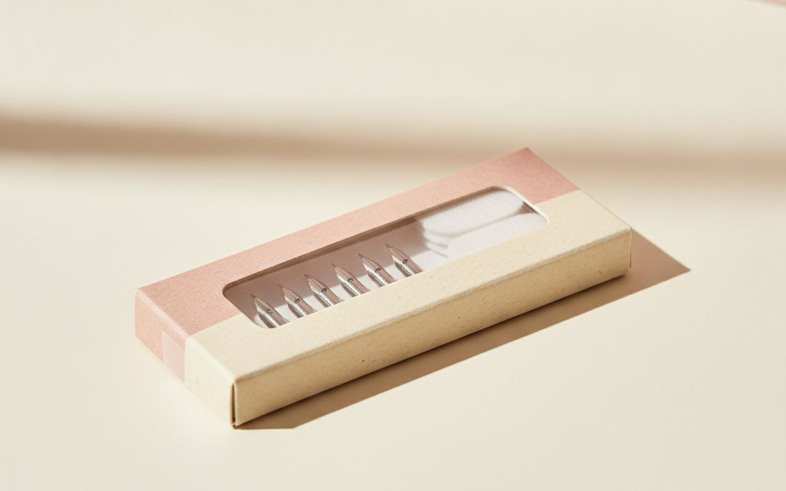
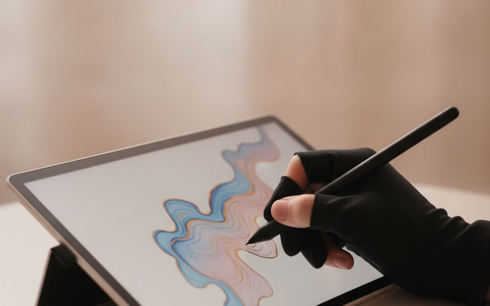
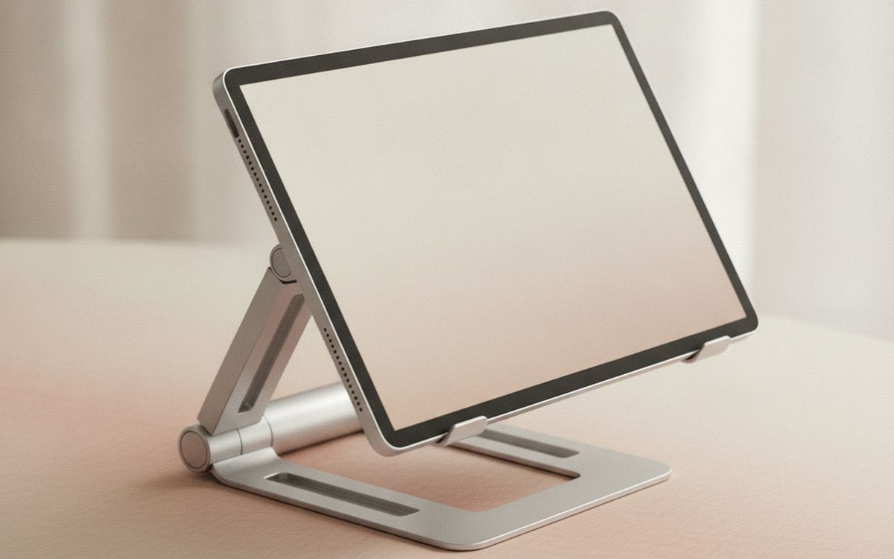
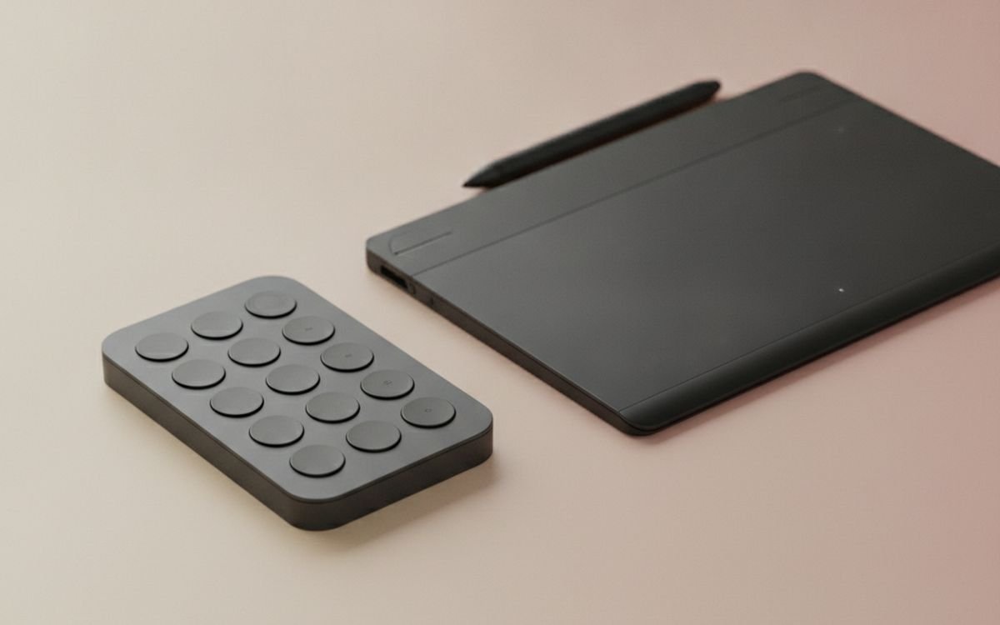

Digital art has never been cheaper to start. A basic pen tablet that plugs into any computer costs less than a set of good markers, and free software like Krita is powerful enough for professionals. Yet many beginners jump straight to an expensive screen tablet, or buy a stylus for a phone and wonder why it feels nothing like drawing.
This list is ordered by value for a beginner. The cheapest option at the top is genuinely good, and many professional illustrators still use one. Further down come screen tablets and iPad setups, which are lovely but cost several times more. The small extras at the bottom are cheap and fix the most common complaints.
Prices below are approximate street prices at the time of writing and move around constantly, especially during sale events. Treat them as a rough band for budgeting, not a quote. Always check the live listing before you buy.
The short version
A small or medium pen tablet (no screen)
The best value start
Disclosure. The links on this page are affiliate links. If you buy through one we may earn a commission at no extra cost to you. It does not affect what makes this list or the order it is in.
How we picked
These picks come from published reviews, digital art communities and long-run owner reports, cross-checked against current retail listings. We have not personally tested every item here. Check that drivers support your operating system, especially on Chromebooks and Linux, before buying.
At a glance
Prices are approximate at the time of writing and change often.
The picks

01 · The best value startA small or medium pen tablet (no screen)
A pen tablet is a pressure-sensitive pad you draw on while watching your computer screen. It feels odd for an evening or two, then becomes natural, and it is how many professionals still work. Wacom's Intuos, and brands like XP-Pen and Huion, make good ones with battery-free pens and thousands of pressure levels. A small size suits a laptop; medium suits a large monitor. At this price, it is the most sensible way to find out whether you enjoy digital art before spending more. The case for it: very cheap way to start, works with any computer, and many professionals use them. The trade-off is real: takes a few days to get used to drawing off-screen and driver support varies on Chromebooks and Linux, so weigh that against how often it would actually get used.
$40-90Trade-off: Takes a few days to get used to drawing off-screen
Why it is here
- Very cheap way to start
- Works with any computer
- Many professionals use them
Worth knowing
- Takes a few days to get used to drawing off-screen
- Driver support varies on Chromebooks and Linux

02 · Starting without spending moreFree drawing software (Krita, or Clip Studio trial)
You do not need expensive software. Krita is free, open source and has excellent brushes for painting and illustration. Clip Studio Paint is popular for comics and manga, with a free trial and affordable licences. Many tablets include a free software bundle, so check before you buy anything. Spend your first month learning one program well rather than trying them all. The case for it: professional features for free, works with any pen tablet, and large tutorial libraries. The trade-off is real: learning any program takes time and some bundles are short trials, not full licences, so weigh that against how often it would actually get used.
Free-$50Trade-off: Learning any program takes time
Why it is here
- Professional features for free
- Works with any pen tablet
- Large tutorial libraries
Worth knowing
- Learning any program takes time
- Some bundles are short trials, not full licences

03 · Drawing directly on screenA 13-16 inch pen display
A pen display lets you draw directly on a screen, which feels much more like paper and is easier for many beginners. They connect to your computer as a second monitor. XP-Pen, Huion and Wacom's One line offer good budget models. Look for a laminated screen, which reduces the gap between pen tip and line, and a good colour range if you paint. They need a desk and cables. The case for it: draw directly on the image, faster to learn for many people, and good budget options now. The trade-off is real: needs a computer and cables and your hand covers part of the image, so weigh that against how often it would actually get used.
$200-450Trade-off: Needs a computer and cables
Why it is here
- Draw directly on the image
- Faster to learn for many people
- Good budget options now
Worth knowing
- Needs a computer and cables
- Your hand covers part of the image

04 · Drawing anywhereAn iPad with Apple Pencil support
An iPad with an Apple Pencil is a complete, portable drawing studio with no computer needed. Drawing on the couch, in a café or on a train is a big reason people draw more. Check which Pencil works with which iPad; the models are not interchangeable. A refurbished iPad from Apple or a known refurbisher lowers the cost. Budget for the Pencil and a screen protector. The case for it: portable, all-in-one, excellent drawing apps, and useful for much more than art. The trade-off is real: expensive once you add the Pencil and pencil compatibility is confusing, so weigh that against how often it would actually get used.
$350-600 plus pencilTrade-off: Expensive once you add the Pencil
Why it is here
- Portable, all-in-one
- Excellent drawing apps
- Useful for much more than art
Worth knowing
- Expensive once you add the Pencil
- Pencil compatibility is confusing

05 · iPad drawing appProcreate
Procreate is the reason many artists buy an iPad. It is a one-time purchase, very easy to learn, with excellent brushes and a huge library of free tutorials and brush packs. For iPad owners, it is the obvious first app. It is not available on Android or computers. The case for it: easy to learn, one-time purchase, and huge tutorial community. The trade-off is real: iPad only and not ideal for complex vector work, so weigh that against how often it would actually get used. For $13 one-time, it is a small, low-risk addition to the list rather than a centrepiece purchase you need to think hard about.
$13 one-timeTrade-off: iPad only
Why it is here
- Easy to learn
- One-time purchase
- Huge tutorial community
Worth knowing
- iPad only
- Not ideal for complex vector work

06 · More grip on glass screensA matte paper-feel screen protector
Glass screens are slippery, and many artists find their lines wobble. A matte paper-texture protector adds grip that feels closer to paper. It reduces glare too. The trade-off is slightly less sharp display and faster nib wear. The case for it: paper-like feel, more control, and less glare. The trade-off is real: wears pen tips faster and slightly softens the display, so weigh that against how often it would actually get used. Priced around $10-20, it is easy to justify even if it only ends up getting occasional rather than daily use.
$10-20Trade-off: Wears pen tips faster
Why it is here
- Paper-like feel
- More control
- Less glare
Worth knowing
- Wears pen tips faster
- Slightly softens the display

07 · Worn tipsSpare pen nibs
Pen nibs wear down, especially on textured surfaces. A worn nib scratches the surface and feels scratchy. Spares are cheap; most tablets include a few. Check you buy nibs made for your pen model. The case for it: keeps the feel consistent, protects the surface, and cheap. The trade-off is real: must match your pen model and replace before the nib gets sharp, so weigh that against how often it would actually get used. At $5-10, it earns its place on this list without asking for a big up-front commitment either way.
$5-10Trade-off: Must match your pen model
Why it is here
- Keeps the feel consistent
- Protects the surface
- Cheap
Worth knowing
- Must match your pen model
- Replace before the nib gets sharp

08 · Smooth hand movementA two-finger drawing glove
Your palm drags on the surface and can trigger touch input on screens. A two-finger glove lets your hand glide smoothly and reduces smudges and accidental touches. It is cheap and people who use one rarely go back. The case for it: smooth hand movement, prevents accidental touches, and cheap. The trade-off is real: sizes vary by seller and needs washing, so weigh that against how often it would actually get used. For $5-12, it is a small, low-risk addition to the list rather than a centrepiece purchase you need to think hard about.
$5-12Trade-off: Sizes vary by seller
Why it is here
- Smooth hand movement
- Prevents accidental touches
- Cheap
Worth knowing
- Sizes vary by seller
- Needs washing

09 · Better postureAn adjustable tablet stand
Drawing hunched over a flat tablet strains the neck and back. A stand angles the tablet or display like a drafting table. Many pen displays include a basic one; a sturdier adjustable stand is a good upgrade for long sessions. The case for it: better posture, more comfortable long sessions, and adjustable angle. The trade-off is real: cheap stands slide when you press and check it fits your device size, so weigh that against how often it would actually get used. Priced around $20-40, it is easy to justify even if it only ends up getting occasional rather than daily use.
$20-40Trade-off: Cheap stands slide when you press
Why it is here
- Better posture
- More comfortable long sessions
- Adjustable angle
Worth knowing
- Cheap stands slide when you press
- Check it fits your device size

10 · Faster workflowA shortcut remote or keypad
Artists constantly undo, change brushes and zoom. A small shortcut keypad puts these under your non-drawing hand, so you stop reaching for the keyboard. Nice to have once you are drawing regularly. The case for it: faster workflow, less reaching for the keyboard, and programmable. The trade-off is real: needs setting up per program and not essential for beginners, so weigh that against how often it would actually get used. At $25-50, it earns its place on this list without asking for a big up-front commitment either way. As with anything on this list, check the exact listing details and current price before adding it to a cart.
$25-50Trade-off: Needs setting up per program
Why it is here
- Faster workflow
- Less reaching for the keyboard
- Programmable
Worth knowing
- Needs setting up per program
- Not essential for beginners
Common questions
Pen tablet or pen display for beginners?
A pen tablet is the cheapest way to start and works well after a short adjustment. A display is easier but costs more.
Can I use a phone stylus for digital art?
Basic capacitive styluses lack pressure sensitivity and feel imprecise. A proper pen tablet is much better.
What free software is good?
Krita is excellent and free. Many tablets also come with software bundles.
iPad or pen display?
iPad if you want portability; pen display if you already have a good computer and want a larger screen.
Today's deals
See what is discounted right now.
Deals →← All guides
As an AliExpress affiliate we earn from qualifying purchases. Prices and availability are accurate as of the date of publication and may change.